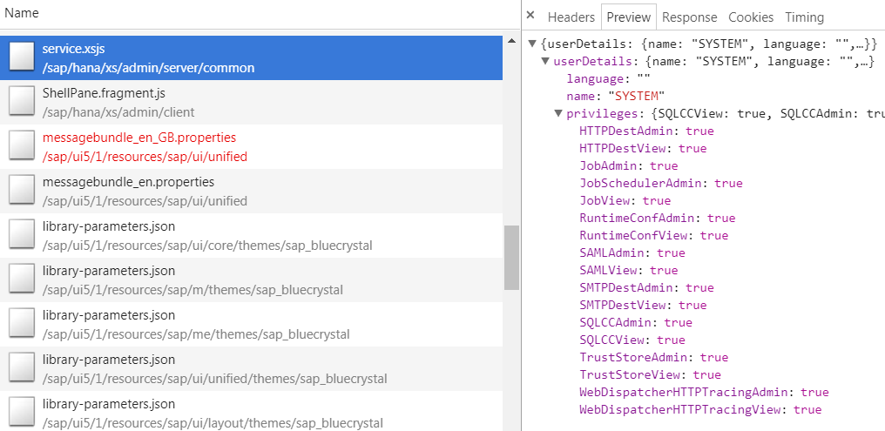
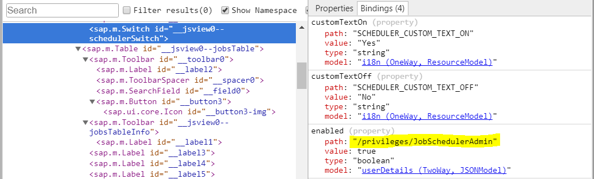

Fiori applications should be role-based, but...
Sometimes we need role flavours...
Sometimes we need context-dependent roles...
Sometimes we just need the same app to adapt to the user roles...
In the end, we need the UI to also check the user roles or privileges. This should NOT replace proper authority checks in the backend.
Simply treat the roles as any other type of data.
Read it from the backend (e.g. via a REST service).
Store it in a JSON or XML model.
Use the model to bind properties from the views.
We'll shortly look into an example from SAP: the SAP HANA XS Admin user interface.
In a nutshell, it uses this exact principle: a REST API for getting the roles, a JSON model for storing them and bindings to this model for adapting the UI.
This is what the REST API produces (and what is stored in the model):
And this is how they use it inside views:
The UI should have its own roles.
It should only work with its own roles and it should not "know" of any other roles.
The backend roles should be mapped into UI roles.
This should be done through one or more adapters (deployed in the UI or in the backend, but logically separate from both).
Each adapter should have the single responsability of doing this mapping.
The logic for adapting the UI to the roles should not pollute the application code. It should be held centrally, in a separate file or package.
This logic should be built-up declaratively.
The ui5-auth library can be used to declaratively define (via a json file) the app roles and adapt the UI based on them.
Adapters currently have be implemented by the developer.
Future versions of the library might contain common adapter implementations.
Can be done with a simple array of strings:
"roles": ["A", "B", "C"]
Either implications or expressions can be used to compute assigned roles based on other roles:
"implications": {
"A": ["B"] // A implies B
},
"expressions": {
"C": "{= ${A} && ${B} }" // C = A && B
}
Actions can be used to adapt the UI based on the role values. Each action should define:
{
"when": "missing:A",
"views": ":all",
"selector": {
"type": "id",
"value": "btnSmth"
},
"action": {
"type": "remove"
}
}
Create adapters for the most common scenarios (e.g. OData adapter).
Design a more fluent DSL for specifying the roles and actions.